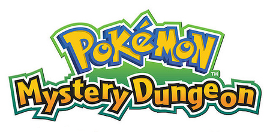

Pokémon Mystery Dungeon (Japanese: ポケモン不思議のダンジョン Hepburn: Pokemon Fushigi no Danjon) is a video game series spin-off from the main Pokémon series developed by Spike Chunsoft (formerly Chunsoft). The games feature the fictional creatures called Pokémon who have the ability to speak human language navigating through a randomly generated dungeon using turn-based moves, indicative of Mystery Dungeon games. As of September 2018, there have been ten games across four platforms, as well as two manga adaptations and several animated specials. These games are based in dungeons (“mystery dungeons”) where a floor map is randomly generated. In the dungeons, players fight other Pokémon while obtaining items and finding stairs to the next floor, exiting the dungeon after a fixed number of floors. Across all installments, the series has sold over 13 million copies.
Gameplay
Although there are different features in each of the titles, the major aspects of gameplay in each title are the same. The player assumes the role of a Pokémon that was transformed from a human, found by the player's Pokémon partner in the start of the game. Before the game starts, the player will need to go through a personality test; this will decide which Pokémon the player is in the game (with the exception of the WiiWare games, Gates to Infinity, and Super Mystery Dungeon, where the player may choose their starter). Gameplay is based on a classic roguelike game, with the player navigating the randomly generated dungeon with their Pokémon team. Movement and actions are turn-based; the player can use basic attacks, Pokémon moves, and items. The game starts with one partner Pokémon, but the player can recruit other Pokémon that they meet in the dungeon into their team soon after the first mission.
Comics
Pokémon Mystery Dungeon: Ginji's Rescue Team, manga adaption of Pokémon Mystery Dungeon: Blue Rescue Team and Red Rescue Team
Pokémon Mystery Dungeon: Blazing Exploration Team, manga adaption of Pokémon Mystery Dungeon: Explorers of Time, Explorers of Darkness, and Explorers of Sky.
Animated specials
Pokémon Mystery Dungeon: Team Go-Getters Out Of The Gate! (2006)
Pokémon Mystery Dungeon: Explorers of Time & Darkness (2008)
Pokémon Mystery Dungeon: Explorers of Sky Beyond Time & Darkness / Pokémon Mystery Dungeon: Sky Expedition ~The Final Adventure Surpassing Time and Darkness~ (2009)
Notes
5.25 million copies sold from the Rescue Team titles, 5.9 million copies sold from the Explorers titles, 650,000+ copies sold from Gates to Infinity, and 1.22 million copies sold from Super Mystery Dungeon.